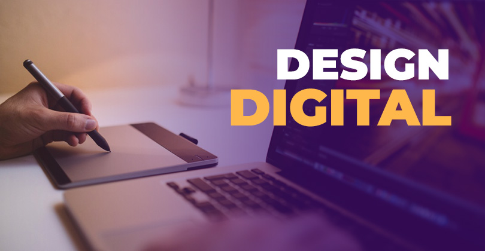

O mundo está cada vez mais conectado, interativo e visual. E a convergência das mídias com as novas tecnologias já é uma realidade em nosso dia a dia.
Estamos sempre consumindo conteúdo, seja nas redes sociais (vídeos, podcasts e fotos) ou em plataformas de streaming como Netflix, Disney+, entre outras. Por isso, para se diferenciarem e causarem impacto com seus produtos e serviços, as empresas precisam investir continuamente em Design, Comunicação Visual, Audiovisual e produção de conteúdo para diferentes tipos de mídias, o que torna o profissional multimídia um dos mais valorizados desse mercado.
Queremos formar o profissional do futuro em Artes Gráficas, Artes Digitais e Audiovisual, ampliando as suas possibilidades de carreira.
ocê vai desenvolver skills em Design Gráfico, Marketing Digital & Social Media, Edição de Vídeo, Filmmaking, Sound Design, User Experience, Motion Graphics, Storytelling, Animação, Modelagem 3D, Branding e Realidade Virtual. E utilizar todo esse knowledge para criar conteúdos para plataformas como Twitch, Youtube e TikTok, e para redes sociais como Instagram, Linkedin, entre outras. Também vai atuar em projetos de Publicidade e Marketing para portais de comunicação e plataformas digitais.
Trabalhar com Design Gráfico e Digital: criação de logotipos, peças gráficas, branding, identidade visual, diagramação, ilustração, produção e edição de imagens. Usar ferramentas de IA Generativa para criação de conteúdo em texto, áudio e imagens. Editar vídeos com os softwares mais utilizados do mercado como Adobe Premiere, Adobe After Effects e DaVinci Resolve. Dominar a captação de vídeo e de áudio, iluminação, edição e fotografia. Criar estratégias de Marketing Digital e Social Media, realizando a gestão de conteúdo para Instagram, Facebook e YouTube. Desenvolver skills em Motion Graphics e Animação 2D e 3D para diversas mídias como web, cinema e publicidade. Aprender técnicas de storytelling para séries, cinema, animações, TV e publicidade. Desenvolver habilidades nas áreas de User Experience & User Interface (UX/UI). Explorar técnicas de 3D Digital Arts para criar games, vídeos e projetos que utilizem realidade virtual e aumentada. Produzir conteúdo para portais web de comunicação, YouTube, redes sociais, entre outros.
Curso Anterior Página Principal Próximo Curso